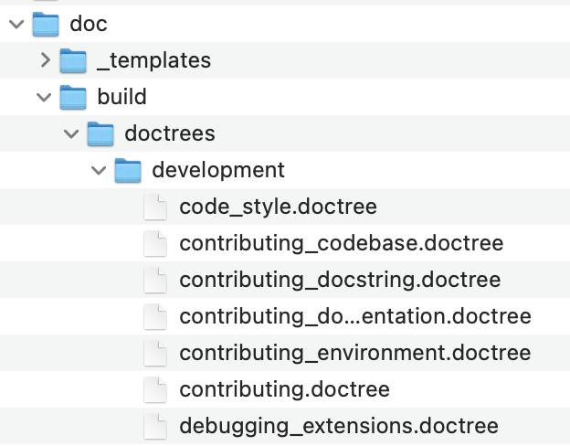

Welcome!
Welcome to the CMU Andrew File System tutorial! The goal of this site is to provide a convenient resource for learning about AFS. You'll find various guides and references about the AFS file system, as well as some examples and tutorials. Click on the navigation links on the left to get started!
AFS Overview
Imagine a file system similar to the one on your personal computer, except all students and faculty of Carnegie Mellon University can create, access and edit files on the system. That describes the Andrew FIle System in a nutshell - a global file system that allows access to files from Mac, Windows or Linux computers.
Unlike cloud storage, the data is stored locally at Carnegie Mellon University and accessed via trusted remote servers.
Here's a visual depction of what's going on:
SSH is a secure way for your computer to access an AFS remote host.
Setting up SSH
Setting up SSH on your computer
MacOS
Open your built-in terminal: Terminal.app and type the following, replacing ANDREWID with your andrew ID into the terminal.
ssh ANDREWID@unix.andrew.cmu.edu
The terminal will prompt you to enter your password - use the same password you use to log onto WebISO
Setting up SSH on your computer
Linux
First, you should choose a terminal. Your distro almost certainly has one already, but if you don’t, the default one you can download another. Some popular terminals are:
- Terminator
- Konsole
- Gnome Terminal
- xterm
- xrvt-unicode
Once you have downloaded the terminal, open the terminal and type the following replacing ANDREWID with your Andrew ID.
ssh ANDREWID@unix.andrew.cmu.edu
The terminal will prompt you to enter your password - use the same password you use to log onto WebISO
Setting up SSH on your computer
Windows
You can either use Windows Subsystem for Linux or MobaXterm(recommended) as your terminal. The instructions for setup and use of MobaXterm are detailed below. If you use WSL, feel free to skep the following instructions.
- Download and Install the Installer edition of MobaXterm here.
- Open the application to see a prompt where you can directly SSH like you would do on a normal Mac terminal.
The terminal will prompt you to enter your password - use the same password you use to log onto WebISO
- Save Session (optional): If you don’t want to type out your username and hostname every time you SSH into AFS, you can ‘Save Session’. Click the ‘Save session’ button at the top left corner of the MobaXterm window.
This will open up a window where you can save your SSH session settings. As indicated by the image below, the fields and values you’ll need to populate are:
- Remote host: unix.andrew.cmu.edu
- Specify username: check the box, then
your_andrewID - Port: 22
Using SSH
Open your terminal and type:
ssh ANDREWID@unix.andrew.cmu.edu
Exiting AFS
In your terminal, hit Ctrl + D (if you are using a Windows computer), Cmd + D (if you are using a Mac) or type:
exit
Basic Linux Commands
File Paths
A file path is a way to specify the location of a file within a file system.
For example:
If you are currently located in the doc directory, to get the file path to code_style.doctree, the desired filepath would be:
./build/doctrees/development/code_style.doctree
Helpful commands
Use pwd in your current directory to get your current file path.
. specifies the current directory in your file path.
.. lets you 'go backwards' a directory in your file path.
On most operating systems, you can use your file navigator (i.e, File Explorer on Windows) to get the file path of a file. Typically you can right-click the file and there will be an option for 'more info' that will list the desired file path.
cd
You can use this command to move around directories/folders in your filesystem.
To enter a directory, use:
cd [directory name]
You can also cd into a directory using a file path:
cd [file path to directory]
ls
ls allows you to view what files are in your current directory.
To see what files are in your current directory, simply use:
ls
rm
rm allows you to remove files and directories.
To remove a file, use:
rm [file path]
To remove an entire directory's contents, use:
rm -rf [directory path]
BE CAREFUL!
rm -rf will remove all files and all sub directories in that directory.
mv
You can use mv to move and rename files.
To move a file to another directory, use:
mv [file path] [desired directory path]
To rename a file, from that file's directory use:
mv [original file name] [new file name]
Transferring Files
To transfer files in between your local computer and AFS, you can use the scp command.
NOTE
scp commands must be executed on your local computer. This means that you will have to exit AFS before transferring files.
To transfer a file from AFS to your computer use:
scp ANDREWID@unix.andrew.cmu.edu:[file path within AFS] .
To transfer a file from your computer to AFS use:
scp [file path] ANDREWID@unix.andrew.cmu.edu:[desired file path in AFS]
AFS Workflow Overview
NOTE Make sure to work on assignments in your private directory, otherwise anyone can see your files which counts as an academic integrity violation!
Steps:
- ssh into AFS
ssh ANDREWID@unix.andrew.cmu.edu
- Enter your private directory
cd private
- Create a class folder if you haven’t already
mkdir 15xxx
- scp handout into directory (or download from autolab)
scp C:/User/ABC/homework.tar ANDREWID@unix.andrew.cmu.edu:~/private/15xxx
- Use vim or VSCode extension to edit files Helpful extensions like SFTP can let you edit files locally and then upload them to AFS from your editor.
About
The AFS Tutorial is created by Roshan Ram, Grace Kang, and Shreya Manjunath, as part of 76-270, Writing for The Professions. We aim to build out a lightweight website, which helps students understand the barebones basics of how to use the Andrew File System, in a user-friendly manner.
References: We draw upon the structure created by 15-150's smlhelp.github.io.